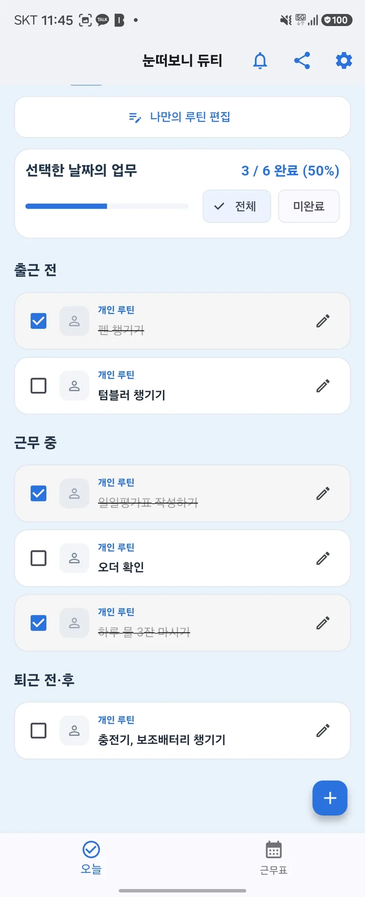
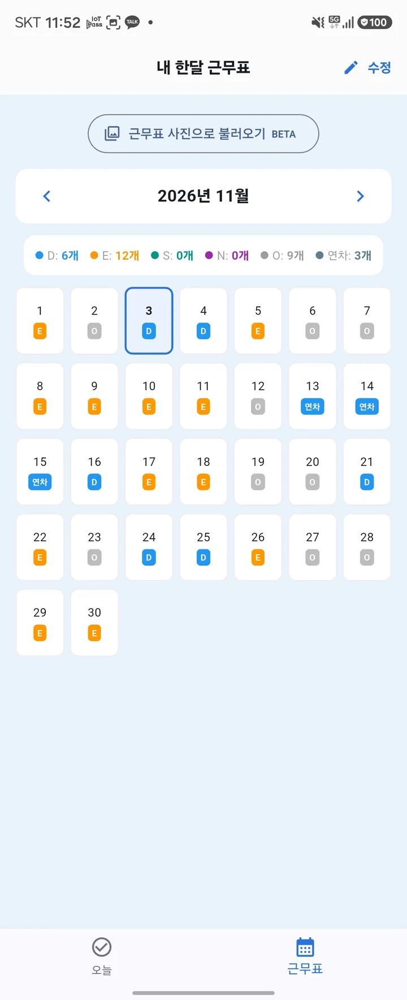
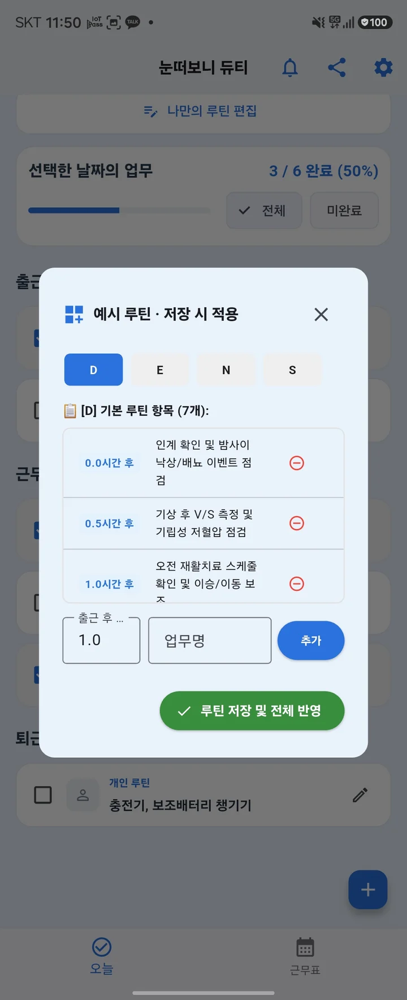
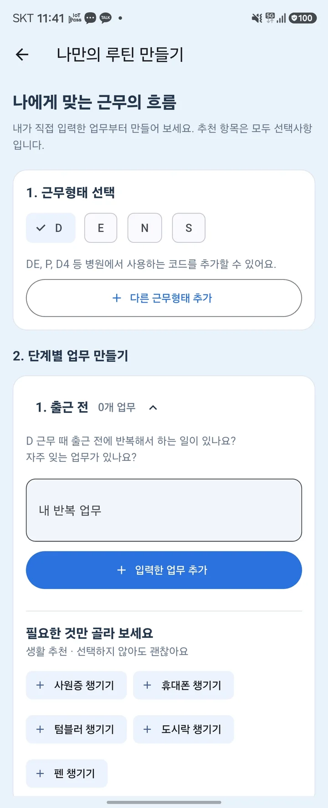
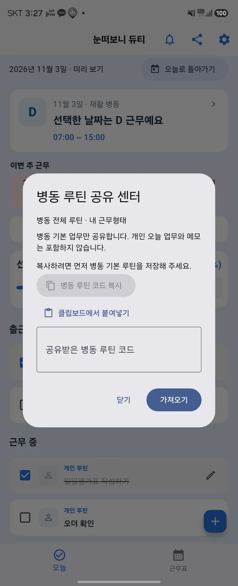
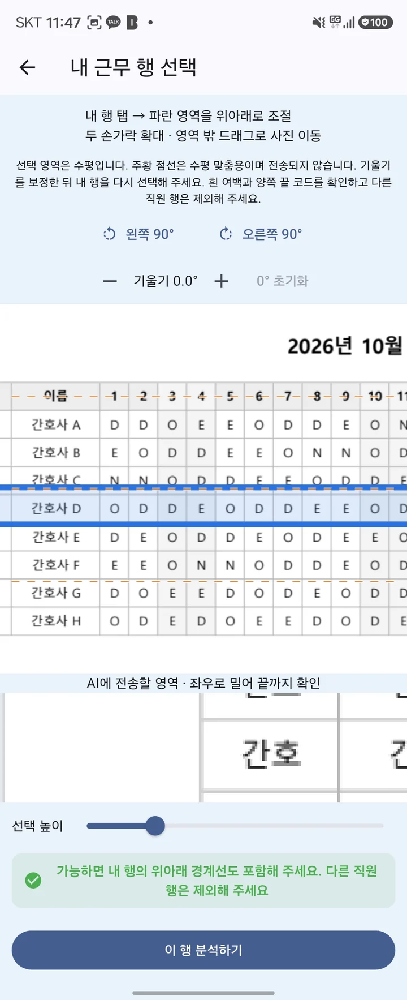

한 달 근무가
한눈에 들어오게.
날짜별 근무와 휴무를 달력으로 확인해요. 병원에서 쓰는 근무코드도 직접 추가할 수 있어요.
간호사와 교대근무자를 위한 앱
눈떠보니 듀티는 간호사와 교대근무자를 위한 근무표·업무 루틴 관리 앱입니다. 한 달 근무를 정리하고, 근무별 반복 업무를 설정해 오늘 필요한 일을 체크하세요.
Android · 현재 무료 · 광고 없음


A LITTLE MORE ORGANIZED
근무를 정리하고, 반복 업무를 설정하고, 오늘 할 일을 확인하세요.
날짜별 근무와 휴무를 달력으로 확인해요. 병원에서 쓰는 근무코드도 직접 추가할 수 있어요.
근무별 반복 업무를 추가하고 편집해요. 자주 하는 일은 나만의 루틴으로 정리하세요.

오늘 근무의 업무를 확인하고 완료한 항목을 체크해요. 그날 필요한 업무도 직접 추가할 수 있어요.
모든 화면은 실제 앱 캡처입니다. 일부 영역을 확대해 보여줍니다.
MAKE IT YOUR ROUTINE
출근 전, 근무 중, 퇴근 전·후.
내가 자주 하는 업무를 근무형태에 맞춰 구성하세요.

WARD MASTER ROUTINE & WARD PACK
병동의 반복 업무를 기본 루틴으로 정리하고, Ward Pack 공유 코드로 전달할 수 있어요. 받은 내용은 확인한 뒤 가져오세요.
병동 기본 루틴을 먼저 저장한 뒤 코드를 복사해 공유합니다. 개인의 오늘 업무와 메모는 공유에 포함하지 않아요.
병동 기본 루틴·공유 알아보기 →
사진으로 가져오는 근무표 BETA
사진에서 본인의 근무 행을 직접 선택해 분석할 수 있어요. 날짜와 근무코드를 확인·수정한 뒤 적용하세요.
사진 분석에는 인터넷 연결이 필요하며, 선택 영역은 외부 분석 서버와 Google Gemini API로 전송됩니다. 불필요한 개인정보가 포함되지 않았는지 확인해 주세요.
사진 분석과 개인정보 안내 →
START SMALL
날짜별 근무를 직접 입력해요.
내 근무에 맞는 루틴을 만들어요.
오늘 근무의 업무를 살펴봐요.
마친 일은 체크하고, 필요한 일은 추가해요.
BEFORE YOUR FIRST SHIFT
네. 월간 근무표에서 날짜별 근무를 직접 등록할 수 있습니다. 사진 인식은 선택 기능이므로 사용하지 않아도 됩니다.
네. 근무별 반복 업무를 설정하고 Today에서 해당 업무를 확인·체크할 수 있습니다. 개인 업무도 추가할 수 있습니다.
현재 무료로 이용할 수 있습니다. 영구 무료를 보장하는 의미는 아니며 운영 정책이 바뀌면 공식 채널을 통해 안내하겠습니다.
YOUR NEXT SHIFT
눈떠보니 듀티에서 근무와 오늘 할 일을 확인하세요.
Android · 현재 무료 · 광고 없음